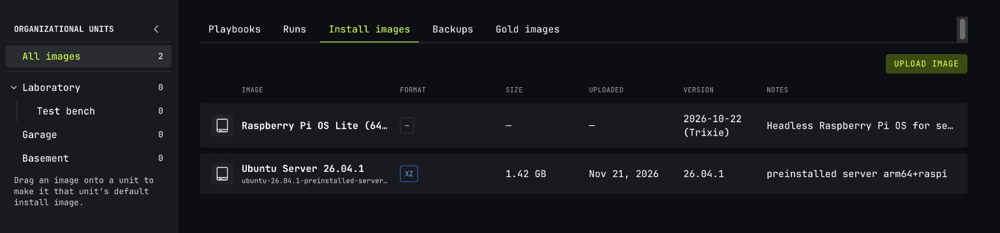
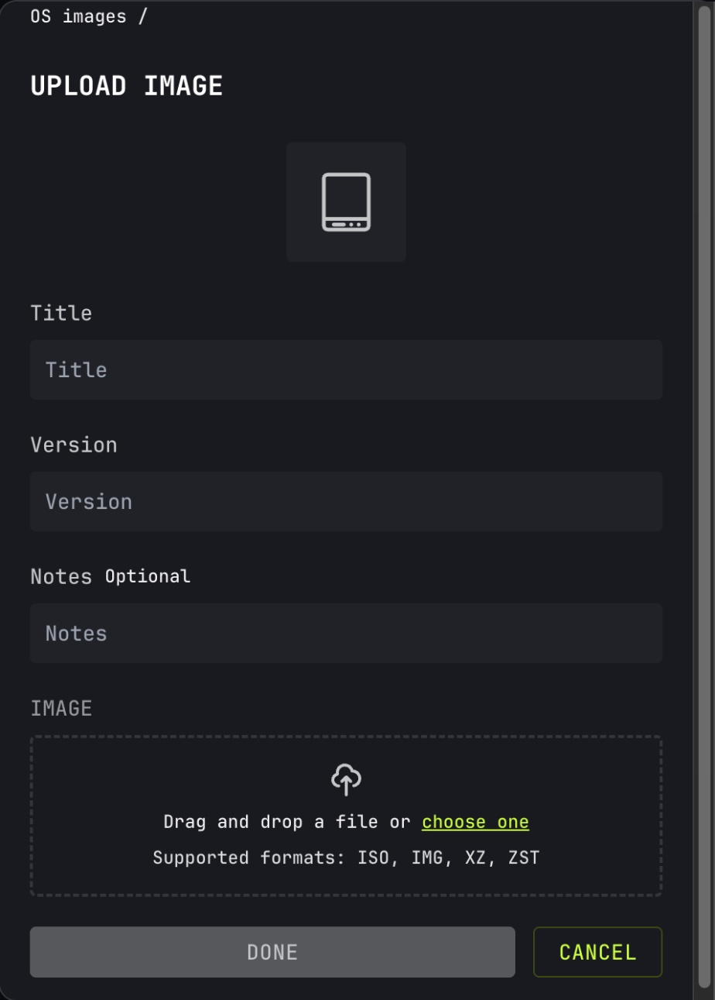
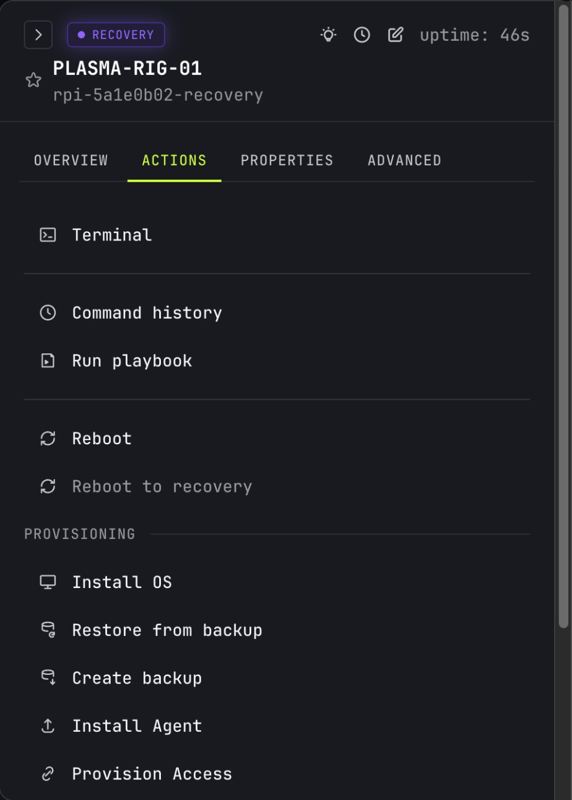
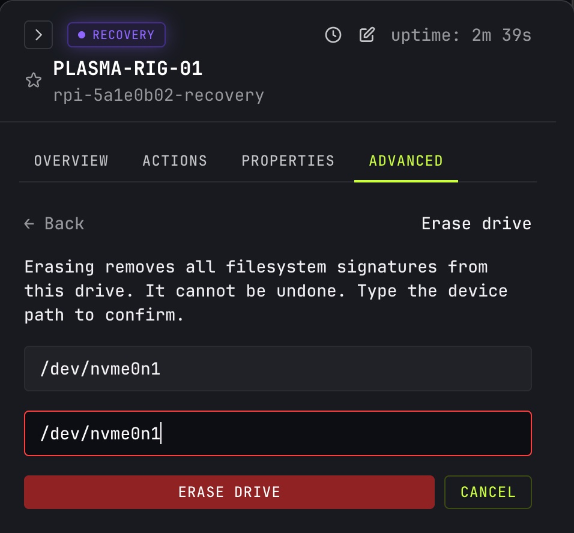
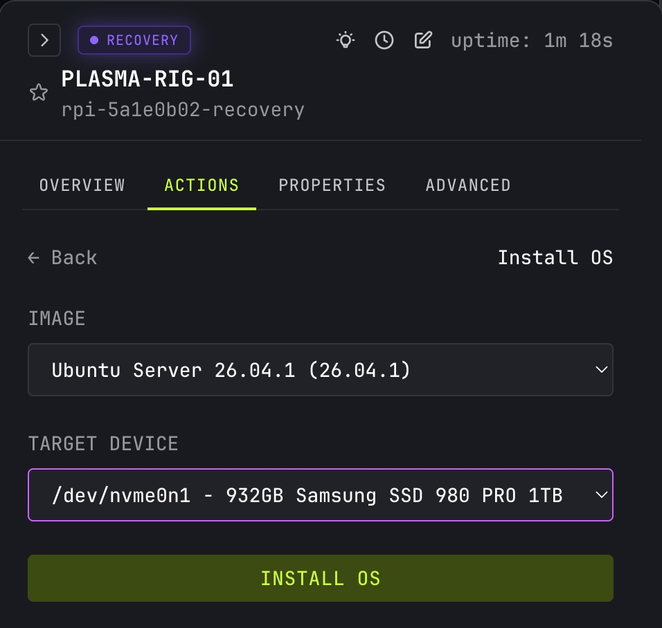
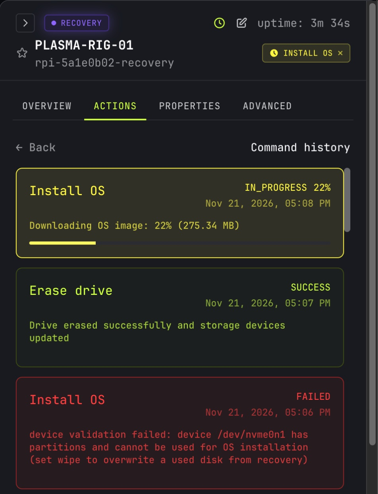
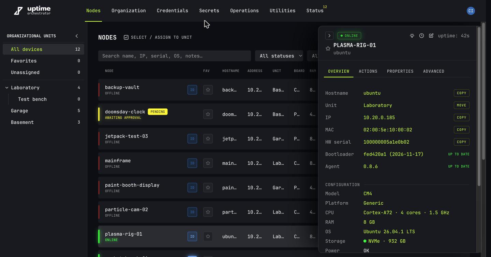
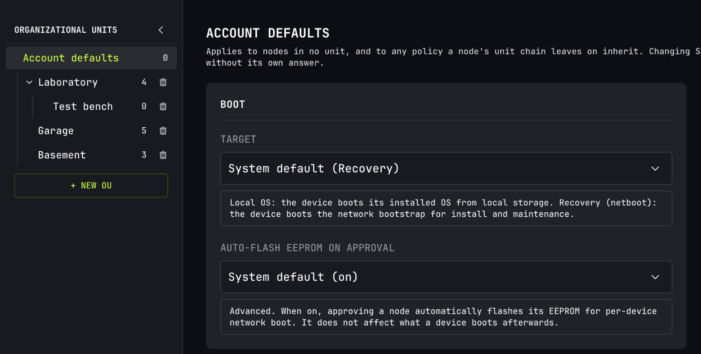
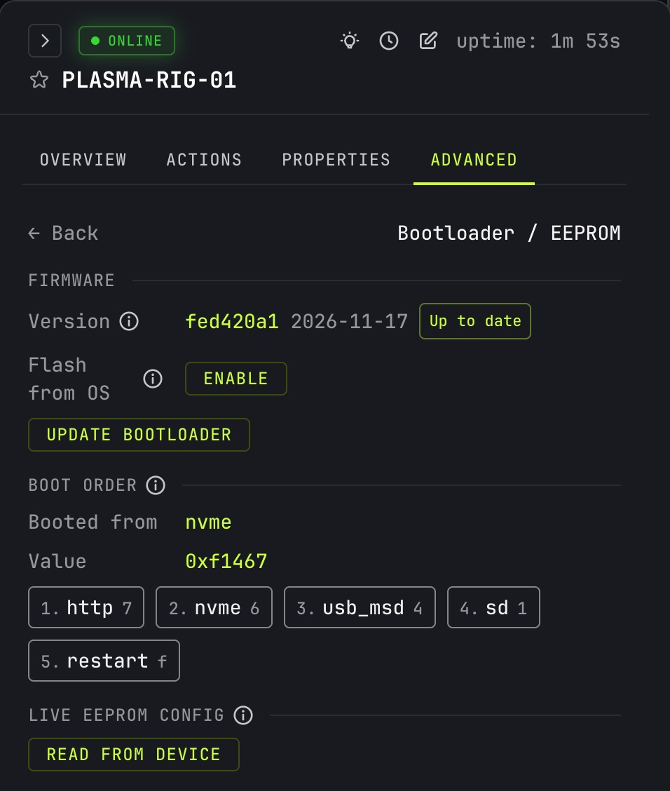

Installing an operating system
Bring a node into the recovery system, write an OS image to its drive, and boot it back into the new system.
Every managed device can be brought into the recovery system: a small Linux that the device boots over the network, signed by your server, running from RAM. From there the server writes an OS image to the device's drive and puts the agent into the new system. Afterwards the device boots that OS from its own disk and the agent keeps it managed. The same cycle serves a first install and a reinstall.
Before you start: the device must be adopted and approved, and its bootloader must be set up for network boot on this server (see The bootloader below).
Images
Images live under Operations → Install images. Each row shows the Image title and file name, the Format (for example XZ), Size, Uploaded date, Version and Notes. A row with — in Format and Size has no file yet and cannot be installed.

To add an image, click Upload image. The form asks for a Title, a Version, optional Notes, and the file itself (drag it in, or choose one). There is no field for a URL: the file is uploaded from your computer. Done stays disabled until a file is chosen.

- Accepted formats are
.imgand.iso(written as they are) and.xzand.zst(decompressed on the device while writing). Anything else is refused at upload. - Vendor
.xzfiles are usually single-block and decompress on one core; Repack to multi-block XZ in the image's settings makes them install about 2.5 times faster. - Size and count limits are set by whoever runs the server. Details: OS-IMAGES.md and CONFIGURATION.md.
The example account has Ubuntu Server 26.04.1 (the official preinstalled server image for Raspberry Pi) as its account default image. You set a default under Organization → Account defaults → Default image, or per unit by dragging an image onto the unit in the left rail of Install images. The default is used when an install does not name an image, for example from a playbook. The Install OS form on a node does not preselect it: you always pick the image there.
The install cycle on one node
The steps below reinstall plasma-rig-01, a Compute Module 4 in the Laboratory.
1. Reboot to recovery
Open the node and go to Actions. An online node offers Terminal, Command history, Change hostname, Run playbook, Reboot and Reboot to recovery, plus the Danger group.
Click Reboot to recovery and confirm. The confirmation explains that this is one-shot: the node netboots once, and the next reboot returns to its current boot target.
The node shows RESTARTING, then, after about two minutes on this board, the violet RECOVERY state in the list and the panel. The hostname becomes rpi-<serial>-recovery, OS (recovery) shows the recovery system, and the address may change.

2. The Provisioning actions
In recovery, Actions gains a Provisioning group: Install OS, Restore from backup, Create backup, Install Agent and Provision Access. Reboot to recovery is greyed out because the node is already netbooted.

3. Erase the drive if it already holds a system
If you are reinstalling, erase the drive first: Advanced → Storage, pick the drive, then Erase drive under Danger. Type the device path to confirm; this removes all filesystem signatures and cannot be undone.

4. Install OS
Click Install OS, pick the Image and the Target Device. The drive list shows what the agent reported: device path, size and model. A Compute Module 4 with an NVMe drive shows only /dev/nvme0n1; a board with a card or eMMC lists those too, so read the path before you choose. Images are grouped into OS images and Backups & golden images.

Click Install OS and confirm. The node stays netbooted afterwards; it does not reboot into the new system on its own.
Progress shows in Command history ("Downloading OS image: 22%") and as a badge in the panel header. A 1.4 GB XZ image takes a few minutes on a gigabit network; single-block archives and slow links take longer.

5. Install the agent
A freshly written system has no agent. Click Install Agent, choose the same Target Device, leave Root Partition empty to auto-detect the largest ext4 partition, keep Agent Type on Full — complete management agent, and Agent Version on latest. It finishes in seconds. (Watcher is a telemetry-only agent that runs no commands.)
Provision Access is optional: it writes the users, keys and environment that apply to this node into the new system before its first boot. Without it, the agent applies access once the node is back online.
6. Boot target Local OS, then reboot
Open Properties and check Boot behavior. It must read LOCAL OS before you reboot. Then Actions → Reboot. plasma-rig-01 came back ONLINE in Ubuntu 26.04.1 about ninety seconds later.

The hostname is now the image default (ubuntu). Use Actions → Change hostname to set it back.
Boot target
Local OS means the device boots its installed system from local storage. Recovery (netboot) means it boots the recovery system for install and maintenance. You can set it in three places:
- per node: Properties → Boot behavior, with Inherit, Local OS and Recovery. A click saves immediately;
- per unit: the unit's Policies tab on the Organization page;
- for the account: Organization → Account defaults → Boot → Target.

A node set to Inherit takes its unit's value, then the parent unit's, then the account default (Organizational units and policies explains inheritance). Account defaults left alone show System default (Recovery), so a node with nothing set anywhere netboots.

Reboot to recovery does not change the saved target for good. The server remembers it, forces netboot for one boot, and puts it back as soon as the node reports from recovery, so a later reboot goes to the local OS again. If the netboot never happens, the forced target stays visible in Boot behavior.
The bootloader (EEPROM)
Network boot works because each device's bootloader is flashed with three things from this server: the server's address, the device's own boot path, and the server's public key. The boot order is network, then NVMe, then USB, then SD card (0xf1467). On every boot the device asks the server for the recovery system; the server serves it when the boot target is Recovery and declines when it is Local OS, and the device falls through to its disk.

This flash happens automatically on approval if Auto-flash EEPROM on approval is on (the default). Flash by hand with Update bootloader when the version shows Update available, or when a banner says the bootloader is not set up for network boot on this install. The write does not reboot the node; Reboot to apply does. Flash from OS lets the server flash from the running system without an SD card. Status lists nodes with Bootloader update available and Bootloader flashed, reboot to apply.
What can go wrong
Backups and gold images
Create backup (in Provisioning, while in recovery) captures the node's disk into a new image. A backup is byte-exact and restores onto the same node as that node. A gold image (the Golden image checkbox) strips the machine identity so it can be installed on any device, which then adopts as a new node. Captures appear under Operations → Backups and Gold images, and in the Install OS and Restore from backup pickers. Restoring a backup onto a different node strips its identity automatically. Details: OS-IMAGES.md.
Next: Working with a node.